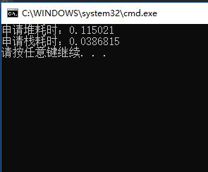

在windows下可以通过QueryPerformanceFrequency()和QueryPerformanceCounter()等系列函数来实现计时器的功能。
根据其函数说明，其精度能够达到微秒级，但是需要硬件中的计时器来支持。至于具体怎么样的硬件能够支持，查了很多资料都没有详细说明；而另外一些资料也说明，如果底层硬件不支持，这两个API就会返回类似于GetTickCount()的精度结果。一般情况下可以放心的使用。
这里就把自己一直用的计时器分享一下，已经简单将其封装成类的形式，大家可以将其加入到常用的工具组件里面，方便使用：
#include<iostream>
#include<Windows.h>
using namespace std;
class CTimer
{
public:
CTimer(void);
~CTimer(void);
int time_in();
double time_out();
private:
LARGE_INTEGER litmp;
LONGLONG qt1, qt2;
double dft, dff, dfm;
};
CTimer::CTimer(void)
{
}
CTimer::~CTimer(void)
{
}
int CTimer::time_in()
{
QueryPerformanceFrequency(&litmp);//获得时钟频率
dff = (double)litmp.QuadPart;
QueryPerformanceCounter(&litmp);//获得初始值
qt1 = litmp.QuadPart;
return 1;
}
double CTimer::time_out()
{
QueryPerformanceCounter(&litmp);//获得终止值
qt2 = litmp.QuadPart;
dfm = (double)(qt2 - qt1);
dft = dfm / dff;//获得对应的时间值
return dft;
}
int main()
{
CTimer timer;
timer.time_in();
for (size_t i = 0; i < 10000; i++)
{
const size_t num = 200 * 1024;
char *tmp = new char[num];
memset(tmp, 0, num);
delete[] tmp;
tmp = nullptr;
}
cout<<"申请堆耗时："<<timer.time_out()<<endl;
timer.time_in();
for (size_t i = 0; i < 10000; i++)
{
const size_t num = 200 * 1024;
char tmp[num];
memset(tmp, 0, num);
}
cout << "申请栈耗时：" << timer.time_out() << endl;
return 0;
}这里的例子分别计算了申请堆和申请栈的时间，其运行结果如下：
